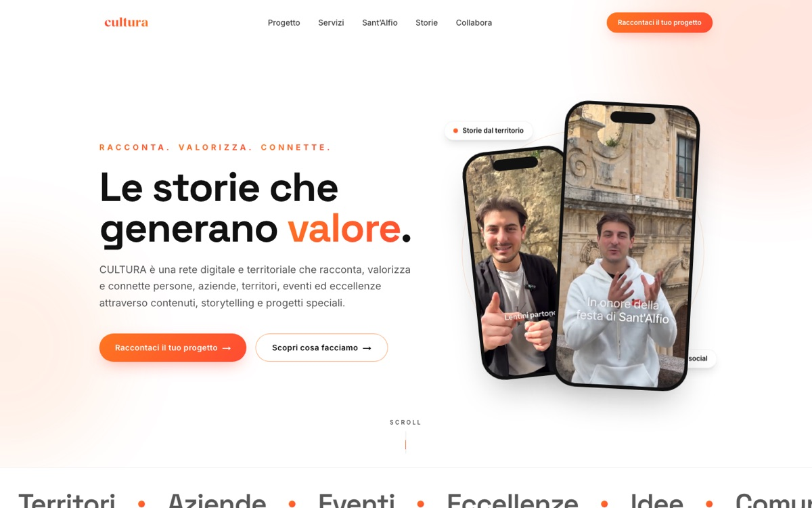

Progetto co-fondato
CULTURA
Le storie che generano valore. Racconta. Valorizza. Connette.
CULTURA è una rete digitale e territoriale che racconta, valorizza e connette persone, aziende, territori, eventi ed eccellenze attraverso contenuti, storytelling e progetti speciali. Non è un cliente: è un progetto che abbiamo fondato, e che portiamo avanti con una regola precisa — poche collaborazioni per stagione, curate davvero.

La collaborazione
Nato con Badia Lost&Found.
CULTURA nasce dall'incontro di due mondi: Freeze Studio, che porta comunicazione, metodo e produzione, e Badia Lost&Found, che porta il territorio, la comunità e le radici. Due co-fondatori, un'idea sola: il racconto del presente serve a valorizzare il passato e a costruire il futuro di una comunità.
Dentro CULTURA passano storie di persone, imprese ed eccellenze locali, la copertura degli eventi e i progetti speciali costruiti con i partner — con una componente di responsabilità sociale a sostegno delle iniziative di solidarietà della comunità.
Il lavoro di Freeze
Identità, sito e formati del racconto.
Per CULTURA abbiamo costruito l'identità e il sito culturahub.it — editoriale, chiaro, con la palette arancio del progetto — e i formati con cui il racconto viaggia: video verticali, caroselli editoriali e contenuti pensati per i social, da Instagram a TikTok.